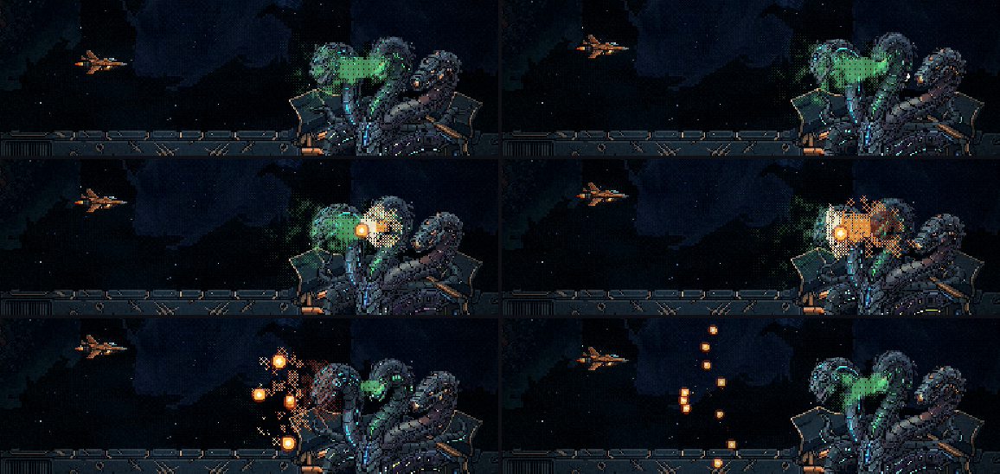
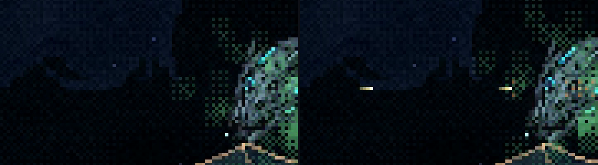

A Serpente: o gás e a faísca
31/10/2026 · a habilidade nova, no lugar do quique · nada foi commitado.
Você: "Temos o azul que solta o raio, o verde pode ter uma caracteristica de poison ou gas, e o laranja a faísca. [...] o verde começa a soltar gás em volta deles e um pouco a frente, o laranja começa a fagulhar esse gás e fogos com formato de plasma começam a ir na direção da nave e se fragmentar".
As decisões que você tomou:
- O tiro da nave também acende a nuvem e joga a explosão de volta nela, mas leva alguns tiros. O tiro esquenta o lugar onde passa e um raio pequeno em volta, não a nuvem inteira, e a dica é sutil. Com a carta INCENDIÁRIO, a nuvem acende no primeiro toque.
- A laranja acende 2 ou 3 vezes por uso.
- As bolas se partem num leque que dá para ler.
- Só o fogo machuca; o gás sozinho não.
A física que segura a habilidade
- O gás traz o próprio oxidante, como combustível de foguete. Sem isso, nada queimaria no vácuo.
- O gás não fica parado nem sobe: sai da boca da verde, se espalha por igual e vai ficando ralo. Por isso a nuvem só é densa em volta delas e um pouco à frente, e só queima ali.
- A faísca voa até a raiz do gás, na boca da verde, e acende ali. A explosão empurra o fogo para longe desse ponto, ao longo do sopro, ou seja, para frente, na direção da nave.
- Fogo sem gravidade é redondo: por isso as bolas de plasma.
- As bolas seguem retas e vão esfriando até apagar, então o alcance tem limite. Cada uma se parte em três, num leque em volta da própria linha; o pedaço do meio continua na linha.
- A verde continua soprando e a nuvem se refaz entre uma faísca e outra (cerca de 1,8 s), por isso as três levas saem com a mesma força.

As três situações

O calor esfria devagar (em cerca de 3 s), então quem insiste no mesmo lugar acende a nuvem no segundo ciclo. No jogo, cada arma esquenta conforme o dano dela: a maquete usa uma arma só. Ela fica no idle porque as animações da verde soprando e da laranja faiscando ainda não existem; eu gero depois que a mecânica for aprovada. Os desenhos do gás, do fogo e das bolas são provisórios.
Para você decidir
- A habilidade está como você imaginou: a nuvem, a faísca e os leques?
- O contra-ataque: o tempo para acender (o segundo ciclo) e a dica estão bons, ou a dica está sutil demais?
- Os bolsões que vêm para a nave quando ela acende a nuvem: ficam, como a física manda, ou a explosão vai toda de volta nela?